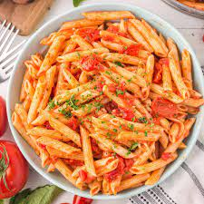

Pasta
 Pasta dish
Description
Pasta in a garlic tomato sauce is the ultimate comfort meal. Made wtih pasta, chicken, spinach, and parmesan cheese, you can make this dish in under 30 minutes!
Ingredients
- Pasta
- Chicken breast
- Olive oil
- Butter
- Garlic
- Tomatoes
- Spinach
- Heavy cream
- Parmesan cheese
Steps
- Prep Pasta: Boil water in a large pot and cook pasta al dente according to package instructions.
- Season both sides of the chicken with salt, garlic powder, Italian seasoning, paprika, and a generous pinch of salt and pepper.
- Heat olive oil in a large heavy duty pan over medium-high heat and cook chicken breasts 5 minutes per side
- To the same pan, add the butter and garlic and cook for 1 minute or until fragrant
- Add the tomato and spinach and cook 2-3 minutes or until the tomato and spinach are soft and wilted.
- Reduce the heat and add the heavy cream and parmesan cheese. Whisk until fully incorporated and creamy. Add a pinch of salt and pepper to taste.
- Drain pasta and slice chicken into thin slices or cubes and return to the same pan.
- Stir to combine and serve!